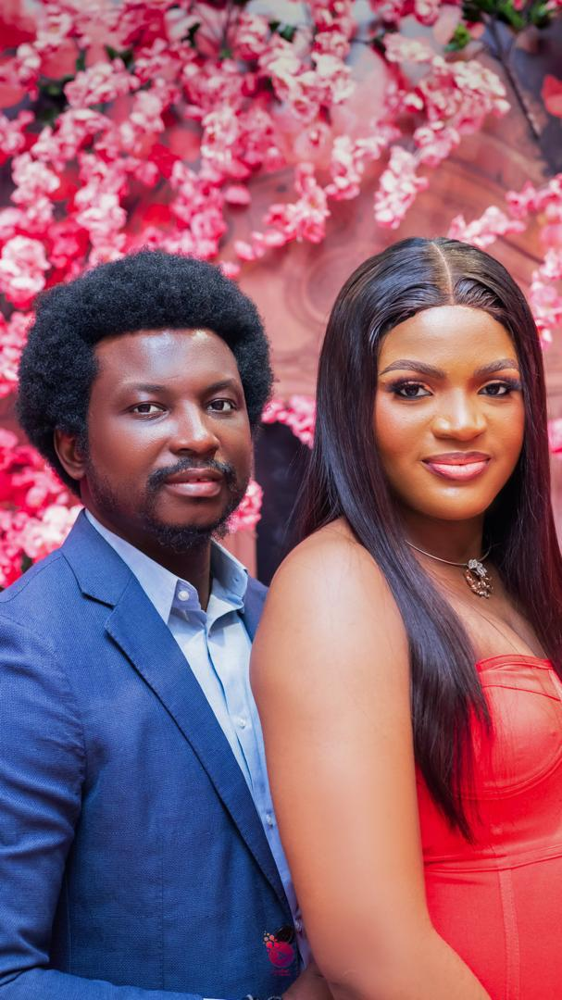
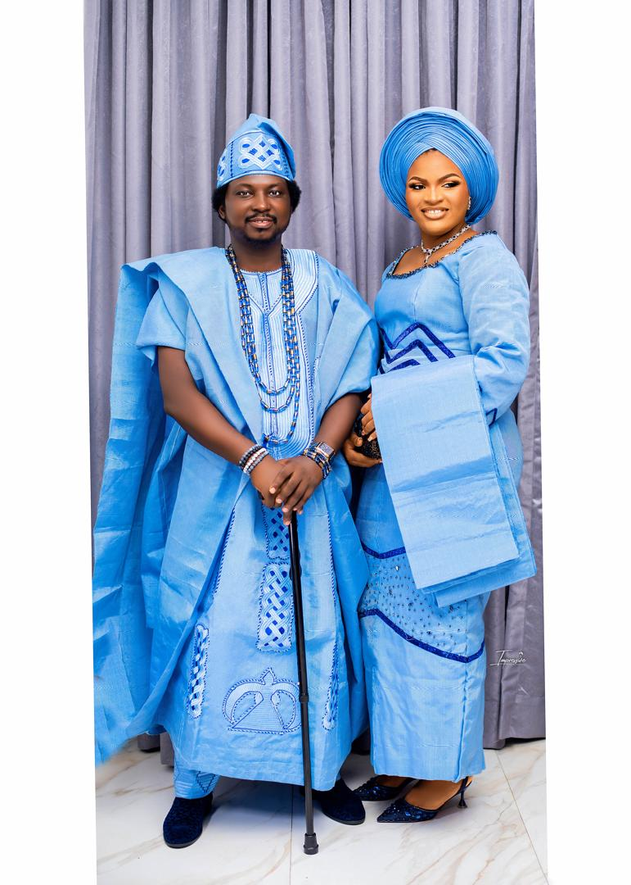

Student Media
I was once a Google Ambassador in the higher institution I attended, I made an video that was uploaded to Youtube during my application to the program.
I love dancing, at the moment, the song I mostly dance to can be found in the audio below.
I also got married in April 2024, you can find a few pictures and video from the prewedding shoot,and traditional wedding
 